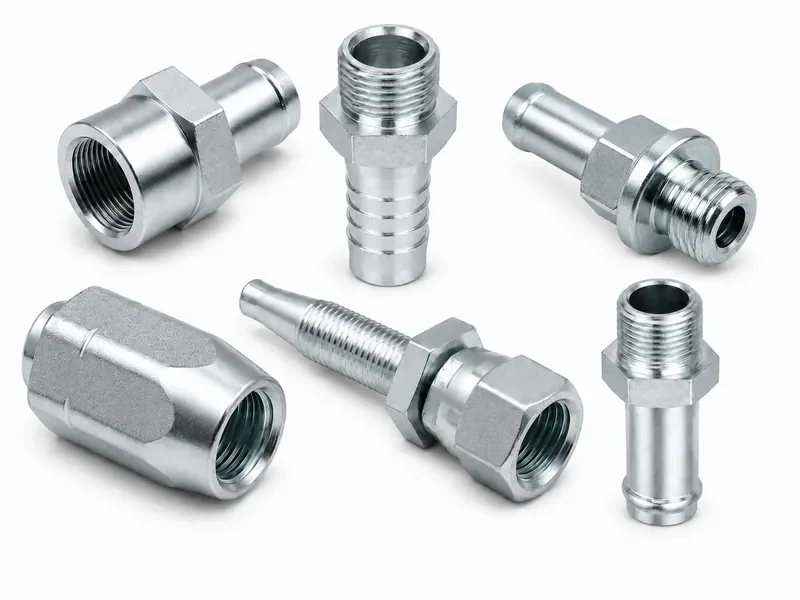
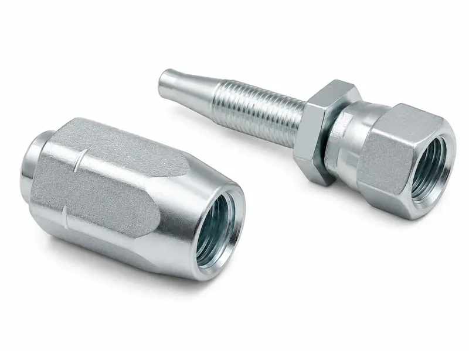
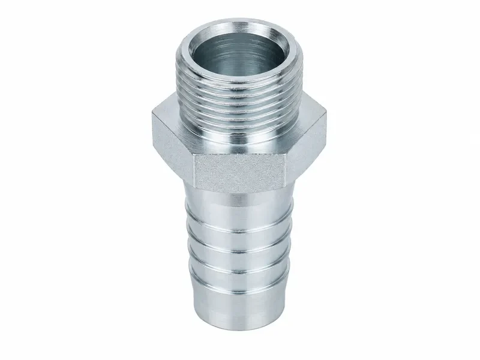
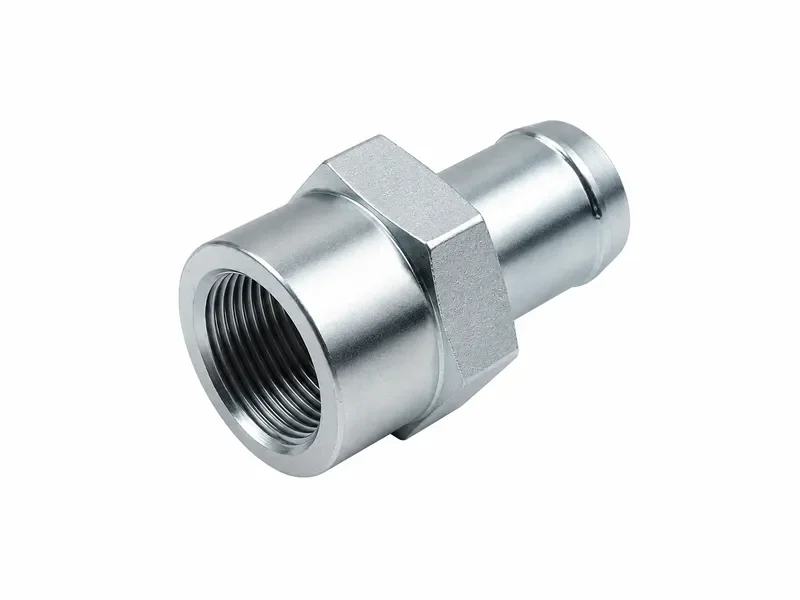
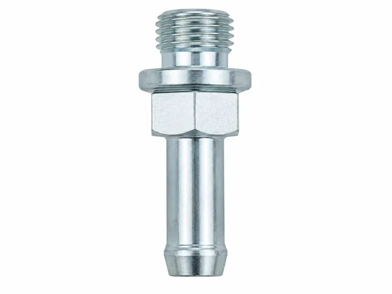

我们按图纸规定的结构加工液压软管接头、软管尾芯、插芯和扣压套筒。评审时将软管侧夹持系统与设备端接口分开，并确认材质、表面处理、检验和生产要求。
仅当批准图纸或订单指定时，接头结构可按SAE J516、适用的ISO 12151系列或ISO/TS 17165-2等装配指导进行评审；实际加工依据订单指定的标准名称和版本。
| 产品类型 | 按图纸定制的液压软管接头零件，是完整软管总成的组成部分。 |
|---|---|
| 软管侧功能 | 软管、尾芯或插芯、套筒、插入状态和批准扣压结构共同实现夹持与密封。 |
| 设备端接口 | JIC、ORFS、BSPP、BSPT、NPT、公制、法兰或图纸专用端；密封方式独立确认。 |
| 装配结构 | 一体式或分体式系统；结构形式不自动代表性能等级。 |
| 软管兼容依据 | 将准确软管系列、结构、尺寸、外胶层、尾芯、套筒和准备方式作为一个系统评审。 |
| 扣压数据依据 | 依据批准图纸、经验证的软管接头数据、客户装配规范或约定验证计划；本页不提供通用设定值。 |
| 本体/尾芯材料 | 碳钢、不锈钢，或经介质和应用评审后的图纸指定材料。 |
| 套筒材料 | 图纸指定钢材或不锈钢；其他材料须经软管系统和制造评审。 |
| 表面处理 | 按图纸与材质要求协调表面处理。 |
| 加工依据 | 批准的2D图纸、3D模型、尺寸经核实样品或订单要求。 |
| 检验依据 | 依据批准图纸及约定的抽检、全检、文件和测试计划。 |
| 压力/验证依据 | 不设产品类别统一等级；完整总成性能以兼容部件、批准装配数据和验证要求为准。 |
| 应用领域 | 经系统评审后用于移动机械、工业设备和OEM柔性液压管路。 |
确认内胶层、增强层、内外径、外胶层和预期工况。
采用批准软管与接头系统规定的轮廓。
使其结构和标识与尾芯及软管匹配。
遵循规定的切割、剥胶或免剥胶方式、清洁度和插入基准。
采用合格工装、受控设备状态、位置、长度和测量程序。
确认标准、尺寸、公母形式、密封位置、配合件和装配要求。
执行约定的尺寸、装配和测试计划。
避免扭转、摩擦、拉伸及接头附近急弯，并遵循软管布管规范。
单个零件尺寸正确不等于完整软管总成已经合格。总成能力须结合部件兼容性、批准装配数据、受控设备、检验、指定测试和最终系统安装确认。
尾芯进入软管内孔，套筒位于软管外侧或按规定结构装配。批准的扣压工艺使指定部件共同作用；软管内胶层、增强层和外胶层结构会影响尾芯与套筒设计。
扣压不足或过度扣压都可能损伤软管、增强层、尾芯或套筒。插入不到位会降低夹持与密封可靠性；错误剥胶会损伤增强层，毛刺或锐边会损伤软管内层。
剥胶或免剥胶由软管结构、接头系统、尾芯、套筒、扣压规范和批准图纸决定，不能由操作人员自行选择。
| 设备端形式 | 主要密封位置 | 装配功能 | 需确认信息 |
|---|---|---|---|
| JIC 37° | 37°金属扩口面 | 直螺纹提供夹紧力。 | 确认标准、尺寸、公母形式、扩口面状态、配合端和拧紧程序。 |
| ORFS | O形圈与平面端面 | 直螺纹提供装配力。 | 确认尺寸、公母形式、O形圈材质、沟槽、端面和配合件。 |
| BSPP | 取决于接头端和油口结构 | 平行螺纹保持指定密封结构。 | 确认座面、组合密封垫、O形圈或其他图纸指定位置。 |
| BSPT | 锥管螺纹啮合并配合适用密封剂 | 螺纹啮合形成连接。 | 确认螺纹规格、啮合、兼容密封剂和油口。 |
| NPT | 锥管螺纹啮合并配合兼容密封剂 | 螺纹啮合形成连接。 | 确认规格、啮合、密封剂、油口和安装程序。 |
| 公制或图纸专用接口 | 按批准图纸规定 | 实现指定配合接口。 | 确认标准及版本、尺寸、公母形式、密封、配合件和装配要求。 |
软管侧扣压结构与设备端密封接口承担不同功能，必须分别评审。
| 项目 | 一体式结构 | 分体式结构 |
|---|---|---|
| 部件结构 | 套筒按产品系列保持、预装或组合在接头本体上。 | 尾芯和套筒作为独立零件选择并装配。 |
| 套筒处理 | 减少单独搬运，但仍须标识和检验。 | 须分别标识并正确配对。 |
| 软管系列依赖 | 必须匹配批准的软管系列。 | 每种尾芯和套筒均须匹配批准软管系列。 |
| 装配工装 | 使用系统批准的模具、扣压机和程序。 | 使用系统批准的模具、扣压机和程序。 |
| 库存标识 | 标识完整接头系列和版本。 | 分别控制尾芯和套筒标识。 |
| 验证要求 | 预装不免除检验或验证。 | 完整选定组合须进行验证。 |
| 选型考虑 | 两种结构没有通用高低等级，不能仅凭结构名称决定压力；不同系列尾芯和套筒不得混用。 | |
确认软管厂家或批准规范、系列、公称尺寸、外径、尾芯系列、套筒系列和设备端接口。
确认切口质量、规定剥胶或免剥胶方式、清洁度、插入深度和对正。
确认批准扣压规范、模具、经校准扣压机状态、工装状态、扣压方法、操作程序、测量方法、位置和长度。
检查最终扣压尺寸、插入基准、套筒状态、增强层外露、软管损伤、扭转、弯头方向、清洁度、螺纹和密封面。
扣压外径不是唯一装配参数。本页不提供扣压机设定值；具体数据须来自批准图纸、经验证系统数据、客户程序或约定验证计划。
可供结构取决于图纸评审、软管系统、材质、工装和生产要求，本清单不表示全部备有库存。旋转螺母主要帮助安装对正，不是动态旋转接头。角度端须按图确认基准面、相对角向、总成长度、密封点间长度和安装空间，不能通过扭转软管修正方向。
| 连接/产品类型 | 柔性 | 夹持或安装 | 流体密封 | 选型注意事项 |
|---|---|---|---|---|
| 扣压式液压软管接头 | 属于柔性软管总成 | 批准的软管侧扣压系统 | 软管侧系统与设备端分别评审 | 匹配软管、尾芯、套筒、数据和布管。 |
| 可重复或现场装配式接头 | 仅在专门设计时属于柔性总成 | 产品专用装配方式 | 按批准设计 | 仅在具体设计和批准程序允许时使用，不得与普通扣压件混同。 |
| 刚性转换接头 | 不包含柔性软管段 | 螺纹或图纸规定的其他连接 | 按具体接口确定 | 不包含软管侧扣压夹持结构。 |
| 穿板接头 | 固定穿板结构 | 面板机械固定 | 两端密封分别确认 | 确认面板、螺母、两端接口和安装空间。 |
| 焊接硬管总成 | 刚性硬管或焊接结构 | 支撑与端部连接 | 焊缝和端部接口要求 | 不提供软管柔性。 |
根据批准设计，加工可包括CNC车削、必要时CNC铣削、尾芯或套筒轮廓、内外螺纹、密封面、指定37°扩口座或端头、指定ORFS端面和沟槽、锥管螺纹、旋转螺母零件、图纸规定的直通/45°/90°本体、六角扳手位、钻孔、镗孔、攻丝、横孔、插入止挡、扣压区尺寸、去毛刺、清洗和尺寸检验。并非每个零件使用全部工序。
可根据材质和订单要求协调表面处理。
碳钢、不锈钢，或经图纸、介质和应用评审的其他材料。
图纸指定钢材或不锈钢；其他材料须经软管系统和制造评审。
可选三价铬镀锌、锌镍涂层、发黑、适用时磷化、不锈钢本色，以及指定且材料兼容时钝化。表面处理不能替代正确选材、软管兼容性、扣压设计或设备端密封设计。
耐压、泄漏、爆破、脉冲、拔脱、保持、尺寸确认或装配资格测试仅在批准图纸、订单或验证计划指定时执行；单个金属接头不能确立完整软管总成的测试性能。
维修替换须核实原软管、端部接口、总成长度、方向和应用条件，不能仅按旧接头外观复制。
仅说明“1/2英寸液压软管接头”不足以准确报价。 至少确认准确软管系列、内外径、增强层、准备方式、尾芯和套筒系列、扣压数据、设备端接口、角度、方向、材质和应用条件。
扣压软管端部零件不能默认重复使用；仅当具体设计和批准程序明确允许时方可复用。拆卸后须检查尾芯和套筒变形、螺纹、密封面、腐蚀、裂纹、涂层损伤和污染。
液压软管接头是完整柔性软管总成中的组成部分。软管侧通过指定夹持系统连接，设备端按所选接口配合并密封。
软管、尾芯或插芯、套筒、准备方式、插入深度、扣压参数和设备端接口必须作为一个兼容系统确认。
不可以。还需要确认准确的软管系列、内外径、增强层结构、剥胶要求、尾芯和套筒系列以及经批准的扣压数据。
一体式结构按产品系列将套筒保持、预装或组合在接头上；分体式结构分别选择并装配尾芯和套筒。两者都不能脱离系统兼容性和验证来确定压力等级。
不能仅凭尺寸混用。非原系统组合须经过技术评审、图纸和装配确认、样件制作、适用验证计划，并由客户或系统负责方批准。
不可以。旋转螺母主要帮助安装对正，不是设计用于带压持续旋转的动态旋转接头；安装后仍须避免软管扭转。
完整总成须采用相互兼容的部件和经批准的装配数据，其允许工况由经过验证的总成规范、限制部件或接口及约定验证要求确定，不能由单个金属接头网页单独定义。
请提供图纸或经核实样品、准确软管规范和尺寸、尾芯与套筒信息、经确认的扣压数据、设备端接口、方向、材质、表面处理、数量、工况及检验或测试要求。
这些指南用于识别和比较液压软管接头的设备端接口。